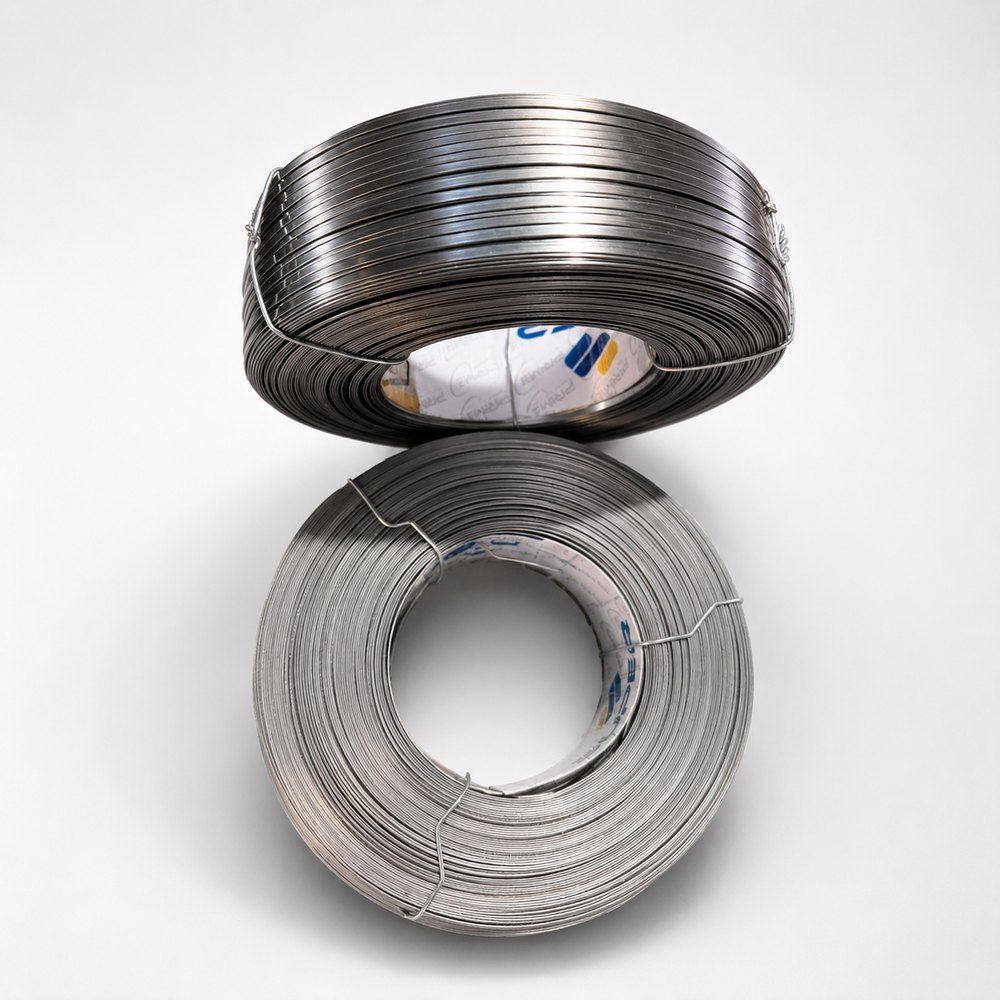

Stainless steel stitching wire.
Solid stainless steel with no coating to wear through, in two families that behave very differently on a packing line. Ferritic grades are magnetic and register on an in-line metal detector. Austenitic grades are effectively non-magnetic and are specified where a magnetic response is itself the problem.

| Property | Value |
|---|---|
| Base metal | Stainless steel, solid — no coating |
| Grades offered | Ferritic (magnetic, 430 type) and austenitic (non-magnetic, 304 or 302 type) |
| Magnetic response | Ferritic: magnetic in all conditions. Austenitic: non-magnetic annealed, slight response after cold work |
| Tensile strength | — |
| Elongation | — |
| Flat sections | 22 to 26 gauge |
| Thickness tolerance | ± 0.02 mm |
| Width tolerance | ± 0.05 mm |
| Finish | Bright / matt |
| Corrosion life | Immune to red rust; austenitic superior in chloride and sustained humidity |
| Relative cost / kg | — |
| Spools | — |
| Packing | Shrink-wrapped and palletised |
Rows shown as — (tensile strength, elongation, relative cost / kg, spools) are pending confirmation from Prime Wires and are available on request. Where a row lists alternatives, confirm the exact variant on enquiry.
What it is drawn for.
The corrosion answer is the same for both. The detection answer is not, and that is what should decide which one you order.
Food and beverage packaging, pharmaceutical cartons, premium printed products, and any line where rust is a rejection and the closure has to be accounted for in a foreign-body control plan.
Which family do you need?
Magnetic — ferritic, 430 type
Iron and chromium, no nickel. Magnetic in every condition it is supplied in, so a broken stitch or a wire fragment registers on the metal detectors that sit at the end of most food and pharmaceutical packing lines. If your customer's HACCP plan leans on metal detection, this is the grade. A foreign body you cannot detect is a worse outcome than one you can.
Non-magnetic — austenitic, 304 or 302 type
Iron, chromium and nickel. Non-magnetic in the annealed condition, though cold work — including the flattening and the clinch itself — raises a slight magnetic response. Specify it where magnetism is the risk: magnetic media, electronics and instrumentation, and lines running magnetic separators that would pull the stitch straight out of the carton. The nickel addition and higher chromium also give it better corrosion resistance than 430 in chloride and sustained high humidity.
Austenitic stainless is a poor electrical conductor and carries no magnetic signature, which makes it markedly harder for a standard in-line metal detector to see than ferritic stainless or plain steel. Plants have specified non-magnetic wire for a food carton on the assumption that stainless is stainless, and discovered at audit that their detection step no longer covers the closure.
Confirm the detection protocol at the receiving plant before you specify non-magnetic. We would rather have that conversation before the order than after it.